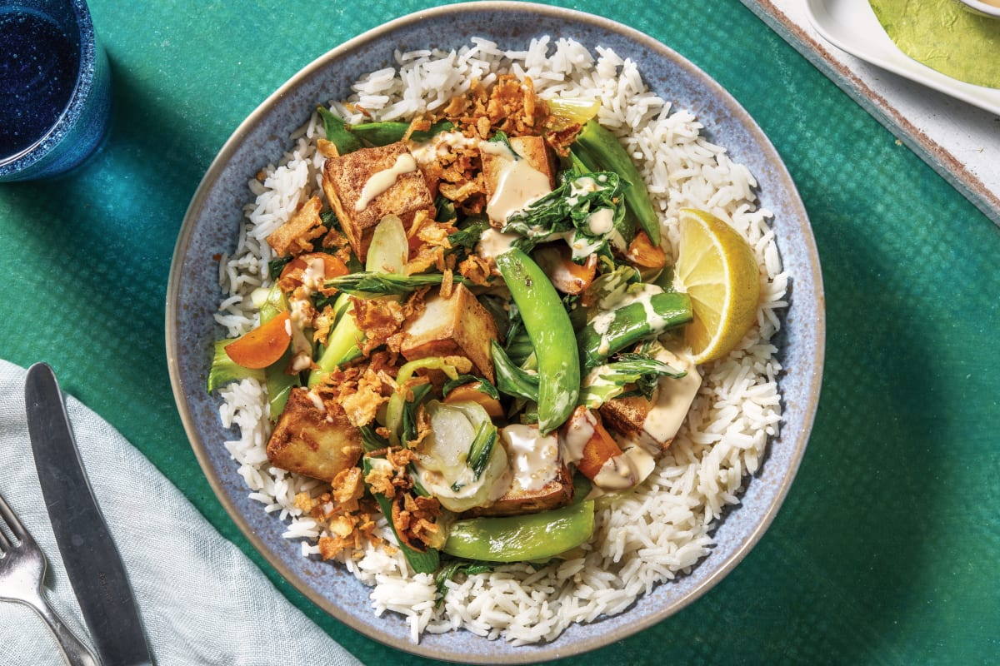

Vegan Tofu Rice Bowl

Ingredients for the Tofu
- 1 teaspoon toasted sesame oil
- 1/4 cup water
- 1/4 cup tamari
- 2 tablespoons chili sauce
- 1 16-ounce package of tofu, cubed
Ingredients for the Bowl
- 2 cups of cucumber
- 1 bag of peas
- 1 tablespoon sesame or canola oil (or any oil)
- 3 cups cooked white rice
- 1/4 cup cilantro, minced
- 2 tablespoons mint, minced
- 3 tablespoons seasoned rice wine vinegar
- Sriracha (or other sauce)
- 1/4 cup peanuts, chopped (or any toppings you like)
DIRECTIONS
- Mix together all of the tofu ingredients, except the tofu itself, in a bowl or plastic bag. Add tofu to marinade mixture and set aside. Tofu should marinate for at least 1 hour, and up to 8 hours.
- Place carrots and cucumbers into two separate bowls Add 1 tablespoon if rice wine vinegar to the bowl with the cucumbers and toss to coat. Set aside for 1 or more hours.
- Add 1 tablespoon of sesame or canola oil to cast iron or non-stick skillet over medium-high heat. Place marinated tofu in pan (but not the marinade). Cook tofu in the pan for 10 minutes until browned. Toss tofu every 2 minutes or so to brown on most sides.
- Once browned, pour the marinade over the tofu and cook for 1 additional minute, until all of the liquid has been absorbed. Remove from heat and set aside until ready to assemble bowls.
- Place 1/2 cup white rice in each bowl. To each bowl, add 1/4 cup each of tofu, carrots, and cucumbers. Top with cilantro, mint, and peanuts. Drizzle with sriracha and serve.